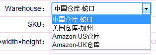
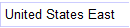

1，左边选择发货仓库，如下图。

右边选择目的地，确定系统即计算出各物流公司的运费。
注解：
1)系统有中国发货到其他国家的数据，当选择中国仓库，右边发送地随意选择都会计算出运费数据。
2)当选择了Amazon-US仓库，那么发送地选择或时才会有运费数据。
3)当选择了Amazon-UK仓库，发送地选择，才会有运费数据。
4)加洲的仓库，系统暂时没有数据。
2，quantity是发货数量，为空即为1个单位数量。
3，最右有两个选框，默认会选中单个，第二个是一箱，鼠标放上去有显示。默认会选中单个，即第一个.一般也不用理会。
4，最后可以选择以什么币种输出，默认是人民币。下拉的币别来源于汇率调整录入的币别，输出的结果也是根据其录入的汇率计算得出。
5、导入运费，更新各物流公司的运费，该处暂时只能由技术人员负责更新，因为需要整理成系统需要的数据格式。